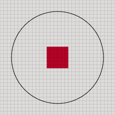
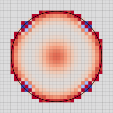

Aphros¶
1. Introduction¶
Aphros is a finite volume solver for incompressible multiphase flows with surface tension. Key features:
implementation in C++14
abstractions for mesh elements (cells, faces and nodes), range-based loops over them and the corresponding data fields (cell-, face- and node-based fields)
convenient and fast development (no need to write 3D loops) using only standard features of the language (without code generators or domain-specific languages)
scalability to thousands of compute nodes using MPI/OpenMP thanks to the Cubism library for distributed computing on structured grids
coroutines to enable encapsulation in the block-wise processing framework
individual solvers can be used separately as regular classes or functions
fluid solver based on SIMPLE or Bell-Colella-Glaz methods
conservative split advection solver based on PLIC
method of particles for curvature estimation that outperforms standard techniques at low resolutions which is well-suited for simulation with many small bubbles and drops
multilayer volume-of-fluid scheme for coalescence prevention which has the computational cost that does not depend on the number of bubbles in the simulation and therefore can describe processes such as generation of foam
The source code is available on GitHub.
2. Communication¶
The grid is decomposed into subdomains, one for each MPI rank. Each subdomain is further divided into cubic blocks of fixed size. The program is built following the SPMD (single program multiple data) model. Each MPI rank processes its blocks sequentially. The code is divided into stages which are executed in parallel on all blocks with synchronization after every stage. This implements coroutines. The code can issue communication requests which are collected during each stage and executed before transferring to the next stage.
The following function consists of two stages:
void F(Mesh& m) {
auto sem = m.GetSem();
struct {
FieldCell<Scal> fc;
}* ctx(sem);
if (sem()) {
fc.Reinit(m, m.GetId());
m.Comm(&fc);
}
if (sem()) {
fc.Reinit(m, 0);
}
}
Mesh m provides functionality for parallel communication. Pointer ctx will be initialized to point at an instance of the user-defined struct persistent across stages of one call of the function. The instance is created before the execution of the first stage and destroyed after the last stage.
Communication requests include:
void Comm(std::unique_ptr<CommRequest>&& r)
void Reduce(std::unique_ptr<Op>&& o)
void GatherToLead(std::vector<T>* buf)
void Dump(const FieldCell<Scal>* field, std::string name)
3. Convection-diffusion equation¶
Abstract class ConvDiffVect describes the interface
of a solver for the vector convection-diffusion equation
in the discrete form
(3.1)¶
where is a cell index,
is a cell-average,
are neighbour faces of cell ,
is a face-average,
is the signed face area
(positive if is an outer normal to )
and  is the cell volume.
is the cell volume.
The constructor takes pointers to fields of density , viscosity , force and volume flux :
// par: parameters
// fcr: density
// ffd: diffusion coefficient
// fcs: source
// ffv: volume flux
ConvDiffVect(
double time, double dt, M& m_, const EB& eb_, Par par_,
const FieldCell<Scal>* fcr, const FieldFaceb<Scal>* ffd,
const FieldCell<Vect>* fcs, const FieldFaceb<Scal>* ffv)
After an implementation is constructed, the solution
is advanced by calling MakeIteration()
and the current velocity field is returned by
virtual const FieldCell<Vect>& GetVelocity(Step) const
The interface also exposes functions
virtual void Assemble(
const FieldCell<Vect>& fcw, const FieldFaceb<Scal>& ffv)
// linear system returned by GetDiag() and GetConst()
virtual void Assemble(
const FieldCell<Vect>& fcw, const FieldFaceb<Scal>& ffv)
// linear system returned by GetDiag() and GetConst()
virtual void Assemble(
const FieldCell<Vect>& fcw, const FieldFaceb<Scal>& ffv)
to assemble the linear system for a given velocity field
fcw from the previous iteration and the volume flux ffv
and access its scalar component d.
Furthermore, the current solution can be explicitly corrected
with
virtual void CorrectVelocity(Step, const FieldCell<Vect>&)
Both these features are required for the pressure correction equation.
3.1. Implicit solver¶
Class ConvDiffVectImp implements an implicit solver
corresponding to the discrete equation
which requires solving a linear system at every iteration.
In addition to the requirements of the base class, the constructor takes mappings describing the boundary conditions and the initial fields:
// ffv: volume flux
ConvDiffVect(
double time, double dt, M& m_, const EB& eb_, Par par_,
const FieldCell<Scal>* fcr, const FieldFaceb<Scal>* ffd,
const FieldCell<Vect>* fcs, const FieldFaceb<Scal>* ffv)
with the initial velocity fcvel,
face conditions mfc,
cell conditions mcc,
density fcr,
viscosity fcd,
force fcs,
and volume flux ffv.
Parameters of the solver are provided by
struct ConvDiffPar {
Scal relax = 1.; // relaxation factor [0,1] (1 -- no relaxation)
bool second = true; // second order in time
ConvSc sc = ConvSc::quick; // scheme for convective flux (see convdiffi.h)
Scal df = 1.; // deferred correction factor
Scal th = 1e-10; // threshold for flow direction
bool stokes = false; // Stokes flow, disable convective fluxes and time
bool symm = false; // use symmetric solver for linear system
bool explconv = false; // explicit convective fluxes in case Conv::imp
};
where sc defines the interpolation scheme
|
First Order Upwind |
|
Central Differences (midpoint) |
|
Second Order Upwind |
|
QUICK |
3.2. Explicit solver¶
Class ConvDiffVectExp implements an explicit solver
corresponding to the discrete equation
Here the solution is advanced by explicit formulas
and the linear system is constructed
only to implement Assemble() and
GetVelocityEquations() of the base class.
5. Multilayer VOF¶
Multilayer VOF is a method for solving the advection equation that can represent multiple interfaces in the same cell. This enables simulations of foams, suspensions, and other multiphase systems where bubbles and drops that do not coalesce.
The split conservative advection scheme Weymouth and Yue [1] operates on a volume fraction field and uses the PLIC reconstruction to compute the fluxes. In three dimensions, one advection step is split into three sub-steps, or sweeps. To ensure conservation, a divergence term is added explicitly. The normals are estimated using the mixed Youngs-centered scheme.
The multilayer VOF implements the same advection scheme but operates on multilayer fields. A multilayer field (u,q) stores mappings between colors q and values u. The colors are real numbers, and none=-1 denotes an empty color. Assuming that each cell can contain at most L=4 values, the mappings are represented as L-tuples up to reordering. For example, the following tuples encode a field (u,q) with three values in cell c1 and two values in cell c2
u[c1]: {0.2, 0.4, 0.1, 0}
q[c1]: { 0, 1, 2, none}
u[c2]: {0.3, 0.7, 0, 0}
q[c2]: { 1, 2, none, none}
The ordering of tuples is insignificant, so simultaneous permutation of values and colors gives equivalent representations
u[c1]: {0.4, 0.1, 0.2, 0}
q[c1]: { 1, 2, 0, none}
u[c2]: {0.7, 0, 0.3, 0}
q[c2]: { 2, none, 1, none}
A conventional field can be constructed from a multilayer field by selecting values with a given color. For example, selecting the values with color qs=2 gives a conventional field us
us[c1]: 0
us[c2]: 0.7
The following pseudocode implements the multilayer VOF method. One advection step is split in the spatial directions and in three dimensions consists of three substeps, or sweeps.
void Step() {
for (d : {0, 1, 2}) {
{u, q} = Sweep(d, u, v, q, n, a);
{n, a} = Plic(u);
}
q = Recolor(u, q);
}
Given the PLIC reconstruction of the interface, one sweep computes fluxes, updates the volume fractions and propagates the colors to downwind cells
auto Sweep(d, u, v, q, n, a) {
// v: mixture flux
// w: phase flux
// qf: phase color from upwind cell
for (f : faces) {
for (l : layers) {
c = AdjacentCell(f, v[f] > 0 ? 0 : 1); // upwind cell
w(f, l) = PlicFlux(n(c, l), a(c, l), h, v, dt, d);
qf(f, l) = q(c, l);
cd = AdjacentCell(f, v > 0 ? 1 : 0); // downwind cell
if (FindLayer(q, cd, q(c, l)) == kLayerNone) {
ld = FindLayer(q, cd, kClNone);
if (ld != kLayerNone) {
q(cd, ld) = q(c, l);
}
}
}
}
for (c : cells) {
for (l : layers) {
fm = AdjacentCell(c, 0);
fp = AdjacentCell(c, 1);
ds = (v[fp] - v[fm]) * dt / volume;
wm = w(c, FindLayer(qf, fm, q(c, l)));
wp = w(c, FindLayer(qf, fp, q(c, l)));
dl = (wp - wm) * dt / vol;
u(c, l) += udiv(c, l) * ds - dl;
if (u(c, l) == 0) {
q(c, l) = kClNone;
}
}
}
return {u, q};
}
Function Plic() builds the PLIC reconstruction in interfacial cells
and returns normals n and plane constants a:
auto Plic() {
for (c : cells) {
for (l : layers) {
uu = Stencil3(c, u, q, q(c, l));
n(c, l) = Normal(uu);
}
auto navg = Avg(n, q, c);
for (l : layers) {
n(c, l) = (n.dot(navg) > 0 ? -navg : navg);
}
a(c, l) = PlaneConstant(u(c, l), n(c, l), h);
}
return {n, a};
}
Normals n are estimated using the standard Youngs-centered scheme Normal()
applied to stencil values assembled by Stencil3(),
which selects values with given color (or zero if the requested color is not
found) on the 3x3x3 stencil.
After all advection sweeps,
Recolor() detects new connected components
and recomputes the colors as described in Connected-component labeling.
The complete implementation of the multilayer VOF is given in src/solver/vofm.ipp.
5.1. Connected-component labeling¶
After each advection step, the colors need to be updated to detect new connected components. The following function initializes the color field with unique values, then iteratively joins the colors from adjacent cells by taking the minimal color until equilibration.
auto Recolor(u, q) {
q_new = InitUnique(u, q);
changed = true;
while (changed) {
changed = false;
q_new = RecolorCorners(u, q, q_new);
for (c : cells) {
for (l : layers) {
for (cn : stencil3(c)) {
ln = FindLayer(q, cn, q(c, l));
if (ln != kLayerNone) {
if (q_new(cn, ln) < q_new(c, l)) {
changed = true;
q_new(c, l) = q_new(cn, ln);
}
}
}
}
}
}
return q_new;
}
To reduce the number of iterations, function RecolorCorners()
runs the same algorithm for corners from cubic subdomains.
The colors propagate through the domain faster.
auto RecolorCorners(u, q, q_new) {
// map: mapping from old color to new color
for (c : corners of subdomains) {
for (l : layers) {
for (size_t d : {0, 1, 2}) {
cn = AdjacentCell(c, d);
ln = FindLayer(q, cm, q(c, l));
q1 = q_new(c, l);
q2 = q_new(cn, ln);
map[max(q1, q2)] = min(q1, q2);
}
}
}
changed = true;
while (changed) {
changed = false;
for (q1 in map) {
if (map[q1] in map) {
map[q1] = map[map[q1]];
changed = true;
}
}
}
for (f : faces) {
cm = AdjacentCell(f, 0);
cp = AdjacentCell(f, 1);
for (l : layers) {
q_new(cm, l) = map[q(cm, l)];
q_new(cp, l) = map[q(cp, l)];
}
}
return q_new;
}
6. Embedded boundaries¶
The method of embedded boundaries allows one to solve equations in complex geometries on a Cartesian mesh. The surface of a solid body is represented by cut cells. A cut cell is obtained by cutting a regular cubic cell with a plane. Discretization of the equations with the finite volume method remains the same, except that the discrete conservation law now includes additional boundaries in cut cells.
The functionality related to embedded boundaries is provided in header
embed.h.
#include <aphros/solver/embed.h>
A new type FieldEmbed transparently combines FieldFace and
FieldCell.
The cell-field stores the values on embedded boundaries.
Given a mesh m,
a combined field is initialized on the mesh similar to other fields
with an optional default value:
FieldEmbed<Scal> fe(m, 0); // [f]ield [e]mbed
The field can be accessed both by cell- and face-indices. The following code traverses all internal cells and faces and assigns a value to the field:
for (IdxCell c : m.Cells()) {
fe[c] = 1;
}
for (IdxFace f : m.Faces()) {
fe[f] = 1;
}
A new class Embed<M> defines
new iterators and geometric routines that take into account cut cells.
The cells and faces are divided into three groups:
regular cells (whole cells inside the domain),
cut cells (cells crossed by the domain boundary),
excluded cells (cells outside the domain).
The same classification applies to faces
regular faces (whole faces inside the domain),
cut faces (faces crossed by the domain boundary),
excluded faces (cells outside the domain).
An instance of Embed<M>, commonly named as eb, is constructed from a
mesh and needs to be initialized from a level-set function
stored in a node-field:
void F(const FieldNode<Scal>& phi) {
auto sem = m.GetSem();
struct {
std::unique_ptr<Embed<M>> eb_;
} * ctx(sem);
if (sem()) {
eb_.reset(new Embed<M>(m));
}
if (sem.Nested()) {
eb_->Init(phi);
}
}
Regular cells are those for which in all adjacent nodes,
excluded cells are those for which in all adjacent nodes,
and other cells are cut cells.
The Embed<M> class defines ranges eb.Cells() and eb.Faces()
such that they include regular and cut cells but not excluded cells.
Another range eb.CFaces() traverses only cut cells.
The name CFaces comes from Cell Faces.
Together, eb.Faces() and eb.CFaces() include all indices
for which an embed-field can be defined.
The following code assigns a value to the embed-field
in cut cells, regular faces and cut faces:
for (IdxCell c : eb.CFaces()) {
fe[c] = 1;
}
for (IdxFace f : eb.Faces()) {
fe[f] = 1;
}
Class Embed<M> also defines geometric routines
such as eb.GetVolume() and eb.GetArea().
The following code computes the total volume of the domain
and the total area of all boundaries:
Scal vol = 0;
for (IdxCell c : eb.Cells()) {
vol += eb.GetVolume(c);
}
Scal area = 0;
for (IdxFace f : eb.Faces()) {
area += eb.GetArea(f);
}
for (IdxCell c : eb.CFaces()) {
area += eb.GetArea(c);
}
The range of neighbor indices eb.Nci() is limited to non-excluded neighbor
faces. The name Nci stands for Neighbor Cell Index.
The following code sums up the values over all faces of one cut cell c:
IdxCell c;
Scal sum = fe[c];
for (size_t q : eb.Nci()) {
IdxFace f = eb.GetFace(c, q);
sum += fe[f];
}
The header defines numerical routines for interpolation and computation of gradients. Some of them require boundary conditions.
MapEmbedCond mec; // boundary conditions
FieldEmbed<Scal> feu(m);
FieldCell<Scal> fcu(m);
FieldCell<Scal> fci = eb.Interpolate(feu);
FieldEmbed<Scal> fei = eb.Interpolate(fcu, mec);
FieldCell<Vect> fcg = eb.Gradient(feu);
FieldEmbed<Scal> feg = eb.Gradient(fcu, mec);
6.1. Advection solver¶
The routines described above are sufficient to implement an advection solver.
// Advection solver.
// fcu: quantity to advect
// mebc: boundary conditions
// vel: advection velocity
// dt: time step
void Advection0(
FieldCell<Scal>& fcu, const MapEmbed<BCond<Scal>>& mebc,
const FieldEmbed<Scal>& fev, Scal dt, const Embed<M>& eb) {
const auto fcg =
UEmbed<M>::GradientLinearFit(UEmbed<M>::Interpolate(fcu, mebc, eb), eb);
const auto feu =
UEmbed<M>::InterpolateUpwind(fcu, mebc, ConvSc::fou, fcg, fev, eb);
// Compute flux.
FieldEmbed<Scal> fevu(eb, 0);
for (auto f : eb.Faces()) {
fevu[f] = feu[f] * fev[f];
}
for (auto c : eb.CFaces()) {
fevu[c] = feu[c] * fev[c];
}
// Advance in time.
for (auto c : eb.Cells()) {
Scal sum = fevu[c]; // sum of fluxes
for (auto q : eb.Nci(c)) {
sum += fevu[eb.GetFace(c, q)] * eb.GetOutwardFactor(c, q);
}
fcu[c] -= sum * dt / eb.GetVolume(c);
}
}
See full example in examples/103_embed_advection/main.cpp.
The previous implementation suffers from the problem of small cells.
Stability requires that the change of the conserved quantity at one time
step does not exceed the cell volume.
Therefore, small cells lead to strong restrictions on the time step.
One common remedy is redistribution of the conserved quantity
to neighboring cells.
Function eb.RedistributeCutCells() redistributes a conserved quantity
from cut cells to their neighboring cells such that the integral of the
quantity does not change.
Using this function in the advection solver results in
// Advection solver with redistribution from cut cells
// and first order upwind scheme.
void Advection1(
FieldCell<Scal>& fcu, const MapEmbed<BCond<Scal>>& mebc,
const FieldEmbed<Scal>& fev, Scal dt, const Embed<M>& eb) {
const auto fcg =
UEmbed<M>::GradientLinearFit(UEmbed<M>::Interpolate(fcu, mebc, eb), eb);
const auto feu =
UEmbed<M>::InterpolateUpwind(fcu, mebc, ConvSc::fou, fcg, fev, eb);
// Compute flux.
FieldEmbed<Scal> fevu(eb, 0);
for (auto f : eb.Faces()) {
fevu[f] = feu[f] * fev[f];
}
for (auto c : eb.CFaces()) {
fevu[c] = feu[c] * fev[c];
}
// Compute the change at one time step.
FieldCell<Scal> fct(eb, 0);
for (auto c : eb.Cells()) {
Scal sum = fevu[c];
for (auto q : eb.Nci(c)) {
sum += fevu[eb.GetFace(c, q)] * eb.GetOutwardFactor(c, q);
}
fct[c] = -sum * dt;
}
fct = UEmbed<M>::RedistributeCutCells(fct, eb);
// Advance in time.
for (auto c : eb.Cells()) {
fcu[c] += fct[c] / eb.GetVolume(c);
}
}
// Advection solver with redistribution from cut cells
// and second order upwind scheme.
void Advection2(
FieldCell<Scal>& fcu, const MapEmbed<BCond<Scal>>& mebc,
const FieldEmbed<Scal>& fev, Scal dt, const Embed<M>& eb) {
const auto fcg =
UEmbed<M>::GradientLinearFit(UEmbed<M>::Interpolate(fcu, mebc, eb), eb);
auto feu = UEmbed<M>::InterpolateUpwind(fcu, mebc, ConvSc::sou, fcg, fev, eb);
// Compute flux.
FieldEmbed<Scal> fevu(eb, 0);
for (auto f : eb.Faces()) {
fevu[f] = feu[f] * fev[f];
}
for (auto c : eb.CFaces()) {
fevu[c] = feu[c] * fev[c];
}
// Compute the change at one time step.
FieldCell<Scal> fct(eb, 0);
for (auto c : eb.Cells()) {
Scal sum = fevu[c];
for (auto q : eb.Nci(c)) {
sum += fevu[eb.GetFace(c, q)] * eb.GetOutwardFactor(c, q);
}
fct[c] = -sum * dt;
}
fct = UEmbed<M>::RedistributeCutCells(fct, eb);
// Advance in time.
for (auto c : eb.Cells()) {
fcu[c] += fct[c] / eb.GetVolume(c);
}
}
The fraction of redistributed quantities eb.RedistributeCutCells() does not
depend on the velocity or the time step. While this makes a stable method,
the unnecessary redistribution of values may reduce the accuracy.
Another approach would be to use a local stability criterion
depending on the velocity

6.2. Diffusion solver¶
The diffusion equation illustrates another problem of small cells which arises in computation of gradients. The diffusive fluxes are proportional to the normal gradient of the quantity. Approximations of normal gradients contain the distance between the face and cell centroids in the denominator.
The following function implements a diffusion solver using this approximation
// Diffusion solver.
// fcu: quantity to advect
// mebc: boundary conditions
// diff: diffusion coefficient
// dt: time step
void Diffusion0(
FieldCell<Scal>& fcu, const MapEmbed<BCond<Scal>>& mebc, Scal diff, Scal dt,
const Embed<M>& eb) {
const auto feg = UEmbed<M>::Gradient(fcu, mebc, eb);
// Compute flux.
FieldEmbed<Scal> fed(eb, 0);
for (auto f : eb.Faces()) {
fed[f] = feg[f] * diff * eb.GetArea(f);
}
for (auto c : eb.CFaces()) {
fed[c] = feg[c] * diff * eb.GetArea(c);
}
// Advance in time.
for (auto c : eb.Cells()) {
Scal sum = fed[c]; // sum of fluxes
for (auto q : eb.Nci(c)) {
sum += fed[eb.GetFace(c, q)] * eb.GetOutwardFactor(c, q);
}
fcu[c] += sum * dt / eb.GetVolume(c);
}
}
 |
 |
See full example in examples/104_embed_diffusion/main.cpp.
// Diffusion solver with redistribution to neighbor cells.
void Diffusion1(
FieldCell<Scal>& fcu, const MapEmbed<BCond<Scal>>& mebc, Scal diff, Scal dt,
const Embed<M>& eb) {
const auto feg = UEmbed<M>::Gradient(fcu, mebc, eb);
// Compute flux.
FieldEmbed<Scal> fed(eb, 0);
for (auto f : eb.Faces()) {
fed[f] = feg[f] * diff * eb.GetArea(f);
}
for (auto c : eb.CFaces()) {
fed[c] = feg[c] * diff * eb.GetArea(c);
}
// Compute the change at one time step.
FieldCell<Scal> fct(eb, 0);
for (auto c : eb.Cells()) {
Scal sum = fed[c];
for (auto q : eb.Nci(c)) {
sum += fed[eb.GetFace(c, q)] * eb.GetOutwardFactor(c, q);
}
fct[c] = sum * dt;
}
fct = UEmbed<M>::RedistributeCutCells(fct, eb);
// Advance in time.
for (auto c : eb.Cells()) {
fcu[c] += fct[c] / eb.GetVolume(c);
}
}
// Diffusion solver with redistribution to neighbor cells
// and LoopFaces() to avoid code duplicatoin.
void Diffusion2(
FieldCell<Scal>& fcu, const MapEmbed<BCond<Scal>>& mebc, Scal diff, Scal dt,
const Embed<M>& eb) {
const auto feg = UEmbed<M>::Gradient(fcu, mebc, eb);
// Compute flux.
FieldEmbed<Scal> fed(eb, 0);
eb.LoopFaces([&](auto cf) { // lambda-function applied to faces and
// embedded faces
fed[cf] = feg[cf] * diff * eb.GetArea(cf);
});
// Compute the change at one time step.
FieldCell<Scal> fct(eb, 0);
for (auto c : eb.Cells()) {
Scal sum = fed[c];
for (auto q : eb.Nci(c)) {
sum += fed[eb.GetFace(c, q)] * eb.GetOutwardFactor(c, q);
}
fct[c] = sum * dt;
}
fct = UEmbed<M>::RedistributeCutCells(fct, eb);
// Advance in time.
for (auto c : eb.Cells()) {
fcu[c] += fct[c] / eb.GetVolume(c);
}
}
|

6.3. Taylor-Couette flow¶
See full example in examples/201_taylor_couette.
6.4. Hydrostatic¶
6.4.1. Single-phase¶
See full example in examples/203_hydrostatic.
6.4.2. Multiphase¶
See full example in examples/203_hydrostatic.
7. Geometric primitives¶
Header func/primlist.h provides routines to define level-set functions
for a list of geometric primitives such as spheres and boxes.
A primitive is described by
struct Primitive {
using Vect = Vect_;
using Scal = typename Vect::Scal;
static constexpr size_t dim = Vect::dim;
Primitive(std::string name_)
: name(name_), inter([](const Rect<Vect>&) -> bool { return true; }) {}
Primitive() : Primitive("") {}
friend std::ostream& operator<<(std::ostream& o, const Primitive<Vect>& p) {
o << "name='" << p.name << "'";
o << " mod='" << (p.mod_minus ? "-" : "") << (p.mod_and ? "&" : "") << "'";
return o;
}
std::string name;
bool mod_minus = false;
bool mod_and = false;
std::function<Scal(const Vect&)> ls; // level-set
std::function<bool(const Rect<Vect>&)> inter; // true if intersects rectangle
std::function<Vect(const Vect&)> velocity; // velocity
Vect c; // center XXX adhoc for GetSphereOverlap
Vect r; // radius XXX adhoc for GetSphereOverlap
};
Function GetPrimitives() parses a stream with a list of primitives.
// Parses a list of primitives in stream buf.
// edim: effective dimension, 2 or 3 (ignores z-component if edim=2)
static std::vector<Primitive> GetPrimitives(std::istream& buf, size_t edim)
Available primitives and their parameters:
sphereEllipsoid with principal axes aligned with the coordinate axes. Parameters:
cx cy cz(center),rx ry rz(half-size);boxRectangular box with sides aligned with the coordinate planes. Parameters:
cx cy cz(center),rx ry rz(half-size);ringTorus. Parameters:
cx cy cz(center),nx ny nz(normal),r(radius),th(thickness);smooth_stepSmooth step Almgren et al. [2]. Parameters:
cx cy cz(center),nx ny nz(normal),tx ty tz(tangent),ln(size along normal),lt(size along tangent);cylinderRight circular cylinder. Parameters:
cx cy cz(center),nx ny nz(normal),r(radius),n0 n1(range along normal relative to center);polygonCylinder bounded by parallel planes with the plane section specified as a sequence of non-intersecting polygons. Parameters:
ox oy oz(origin),nx ny nz(normal),ux uy uz(direction of 2D x-axis),n0 n1(range along normal relative to origin),scale(factor applied to 2D vertices),x y ...(2D vertices of all polygons, first and last vertices of each polygon must coincide);ruledRuled surface bounded by parallel planes with two plane sections on the opposite sides specified as two sequences of non-intersecting polygons. Parameters:
ox oy oz(origin),nx ny nz(normal),ux uy uz(direction of 2D x-axis),n0 n1(range along normal relative to origin, sides 0 and 1),scale0 scale1(factors applied to 2D vertices on sides 0 and 1),x y ...(2D vertices of all polygons on side 0, first and last vertices of each polygon must coincide),x y ...(same but on side 1).
Each primitive defines a level-set function which is positive inside the body. By default, the resulting level-set function is composed from the list of primitives using the union operation (taking the maximum value). To change the default operation, modifiers can be added before the name of the primitive:
-: minus, multiply level-set by -1;&: intersection, take the minimum with the current level-set.
Example of a list of primitives
# cx cy cz rx ry rz
box 0.7 0.3 0.4 0.25 0.2 0.15
&cylinder 0.55 0.25 0.5 0 0 1 0.22 -1 1
&-cylinder 0.7 0.3 0.4 1 0.5 0 0.07 -1 1
# cx cy cz rx ry rz
sphere 0.3 0.3 0.7 0.25 0.2 0.15
&-box 0.45 0.3 0.7 0.1 0.2 0.03
# cx cy cz nx ny nz r th
ring 0.3 0.7 0.5 0 1 0.5 0.15 0.05
# cx cy cz nx ny nz tx ty tz ln lt
smooth_step 0.5 0.5 0.1 0 0 1 0 1 0 0.05 0.1
# cx cy cz tx ty tz r t0 t1
cylinder 0.75 0.7 0.3 -2 1 0.5 0.1 -0.2 0.2
-sphere 1 0.2 0 1.3
&-cylinder 0.1 0.8 0.8 -2 1 0.5 0.1 -0.2 0.2
(see setup in examples/200_primlist)
{kind=link}
Parameter list_ls in the configuration defines the
method of computing the volume fraction field from the level-set functions
set int list_ls 0step-wise approximation (1 if level-set is positive, 0 otherwise);
set int list_ls 1linear approximation with normal and plane constant computed from the level-set at the cell center, does not support modifiers;
set int list_ls 2using the
overlaplibrary to compute the exact volume fraction cut by an ellipsoid (only valid for primitivesphere);set int list_ls 3linear approximation with normal and plane constant computed from the level-set on mesh nodes, supports modifiers.
8. Boundary conditions¶
Header func/init_u.h provides routines to describe boundary
conditions based on primitives.
The list of boundary conditions is a list of code blocks with primitives.
8.1. Code blocks¶
A code block is described by
struct CodeBlock {
std::string name;
std::string content;
};
and has the following format
NAME {
CONTENT
}
where NAME does not contain { or }
and CONTENT may contain only matching {...}.
Examples of code blocks
name {
content
}
name { content }
name with spaces {
content { inside {inside} braces }
}
The following function extracts a list of blocks from a stream
// Parses a stream and returns a list of code blocks.
std::vector<CodeBlock> ParseCodeBlocks(std::istream& f)
Leading and trailing whitespaces are stripped.
8.2. Groups of primitives¶
Boundary conditions are selected inside groups of primitives organized as code blocks. The name of the block is the boundary condition to set and the content is a list of primitives describing a single level set function. Affected are cut cells and faces on the domain boundary.
wall 0 0 0 {
box 0 0 0 10
}
wall 1 0 0 {
sphere 0.7 0.5 0.5 0.2
}
slipwall {
sphere 0.3 0.5 0.5 0.2
}
inlet 1 0 0 {
sphere 0.5 0.7 0.5 0.2
}
symm {
sphere 0.5 0.5 0.7 0.2
sphere 0.5 0.5 0.3 0.2
}
The following function parses parses a file
and returns a MapEmbed object containing face and cut-cell conditions.
MapEmbed<size_t>, MapEmbed<size_t>, std::vector<std::string>>
ParseGroups(
std::istream& fin, const MEB& eb, const FieldCell<bool>& fc_innermask)
9. Output¶
Simulations produce output of various types:
statistics (stdout)
fields (HDF5, plain or XML VTK)
PLIC polygons (polydata legacy VTK)
marching cubes triangles (polydata legacy VTK)
boundary conditions (polydata legacy VTK)
Boundary conditions are written to bc.vtk if enabled by set int
dumpbc 1. It contains cell fields block (block id), cond
(conditions for advection) and condfluid (conditions for fluid,
see Fluid boundary conditions.).
The output is implemented in function
void DumpBcPoly(
const std::string filename, const MapEmbed<size_t>& me_group,
const MapEmbed<typename MEB::Scal>& me_contang, const MEB& meb,
typename MEB::M& m)
10. Tools¶
10.1. AWK for CSV files¶
10.1.1. Synopsis¶
ap.cawk [-v var=value] [‘prog’] [CSV ..]
10.1.2. Description¶
10.1.3. Examples¶
$ cat example.csv
x,y
1,10
2,20
$ ap.cawk '{print $x + $y}' example.csv
11
22
$ ap.cawk 'NR == 2 {print HEADER} {print $x + $y}' q
x,y
11
22
33
10.1.4. Source¶
10.2. Format¶
10.2.1. Synopsis¶
ap.format [-y]
runs clang-format for all C/C++ files found recursively from current directory.
- -y
Force ‘yes’ for all questions
10.2.2. Configuration¶
The configuration is based on Google code style with modifications.
10.2.3. Source¶
11. Library¶
11.1. VOF advection¶
11.1.1. Synopsis¶
Volume-of-fluid advection solver with PLIC reconstruction.
11.1.2. Parameters¶
struct VofPar {
using Scal = typename M::Scal;
using Vect = typename M::Vect;
size_t dim = 3; // dimension (dim=2 assumes zero velocity in z)
Scal clipth = 1e-10; // vf clipping threshold
Scal filterth = 0; // orphan filtering threshold
bool recolor = true; // run connected component labeling on every step
bool recolor_unionfind = true; // use union-find algorithm
bool recolor_reduce = true; // reduce set of colors to integers
bool recolor_grid = true; // use grid heuristic
Scal clfixed = -1; // if >= 0, value for color at point clfixed_x
Vect clfixed_x = Vect(1e10);
bool cloverride = false; // XXX adhoc if clear1<1, override color with 0
bool sharpen = false;
Scal sharpen_cfl = 0.5;
size_t layers = 4;
Scal avgnorm0 = 1; // original normal with sum(u)<avgnorm0
Scal avgnorm1 = 1; // overriden normal with sum(u)>=acgnorm1
Scal coalth = 1e10;
int verb = 0;
bool bcc_reflectpoly = true; // reflection for DumpPolyMarch
Scal dumppolymarch_fill = -1; // fill cells outside
bool vtkbin = true;
bool vtkmerge = true;
bool vtkpoly = true; // dump vtk polygins instead of lines
Scal vtkiso = 0.5;
enum class Scheme { plain, aulisa, weymouth };
Scheme scheme = Scheme::weymouth;
// Enables extrapolation to halo or cut cells,
// required for the contact angle model.
// Extrapolate volume fraction to excluded cells before computing normals
// Extrapolate volume fraction, plane constant and normals to cut cells
// after the advection step.
// If embedded boundaries are enabled, supports only periodic condtitions.
bool extrapolate_boundaries = false;
Labeling<M>* labeling = nullptr; // Pointer to implementation of
// connected component labeling.
// Defaults to Recolor().
};
11.1.3. Source¶
11.1.4. Example¶
examples/100_advection/main.cpp
// Created by Petr Karnakov on 24.12.2019
// Copyright 2019 ETH Zurich
#undef NDEBUG
#include <cassert>
#include <iostream>
#include <memory>
#include <string>
#include <distr/distrbasic.h>
#include <solver/vof.h>
using M = MeshCartesian<double, 3>;
using Scal = typename M::Scal;
using Vect = typename M::Vect;
void Run(M& m, Vars&) {
auto sem = m.GetSem();
struct {
std::unique_ptr<Vof<M>> as; // advection solver
FieldCell<Scal> fc_src; // volume source
FieldEmbed<Scal> fe_flux; // volume flux
MapEmbed<BCondAdvection<Scal>> mf_cond; // face conditions
} * ctx(sem);
auto& as = ctx->as;
const Scal tmax = 1.;
const Vect vel(0.5, 0.3, 0.1);
const Scal cfl = 0.5;
if (sem("init")) {
auto& fc_src = ctx->fc_src;
auto& fe_flux = ctx->fe_flux;
auto& mf_cond = ctx->mf_cond;
fc_src.Reinit(m, 0);
fe_flux.Reinit(m, 0);
for (auto f : m.Faces()) {
fe_flux[f] = vel.dot(m.GetSurface(f));
}
FieldCell<Scal> fccl(m, 0); // initial color
FieldCell<Scal> fcu(m, 0); // initial volume fraction
for (auto c : m.Cells()) {
fcu[c] = (m.GetCenter(c).dist(Vect(0.5, 0.5, 0.5)) < 0.2);
}
const Scal dt = cfl * m.GetCellSize()[0] / vel.norm();
typename Vof<M>::Par p;
as.reset(
new Vof<M>(m, m, fcu, fccl, mf_cond, &fe_flux, &fc_src, 0., dt, p));
}
sem.LoopBegin();
if (sem.Nested("start")) {
as->StartStep();
}
if (sem.Nested("iter")) {
as->MakeIteration();
}
if (sem.Nested("finish")) {
as->FinishStep();
}
if (sem("checkloop")) {
if (as->GetTime() >= tmax) {
sem.LoopBreak();
}
}
if (sem("dump")) {
m.Dump(&as->GetField(), "u");
}
if (sem()) {
}
sem.LoopEnd();
}
int main(int argc, const char** argv) {
std::string conf = R"EOF(
set int bx 1
set int by 1
set int bz 1
set int bsx 16
set int bsy 16
set int bsz 16
set int px 1
set int py 1
set int pz 1
)EOF";
MpiWrapper mpi(&argc, &argv);
return RunMpiBasicString<M>(mpi, Run, conf);
}
12. Log¶
12.1. Surface tension as gradient¶
2018-08-30 22:08:47
Goal: zero integral of force
What: surface tension as on faces, curvature in cells copied from neighbour faces if nan.
Result: instability for test of single drop equilibrium,
Data: doc/sphinx/src/log/log01_grad_ka
doc/sphinx/src/log/log01_grad_ka/grad_ka.mp4: surface tension as
doc/sphinx/src/log/log01_grad_ka/k_grad_a.mp4: surface tension as
doc/sphinx/src/log/log01_grad_ka/k_grad_a_kmean.mp4: mean curvature on face if both cells contain interface
12.2. Particle normal displacement¶
2018-09-02 09:41:49
Goal: reduce spurious flow and deformation for single drop equilibrium
What: particle strings without normal displacement, position of central particle fixed at the interface line center
Result: deformation of the interface greatly reduced, probably due to stronger coupling or penalization of deformed interfaces
Data: doc/sphinx/src/log/log02_dn
doc/sphinx/src/log/log02_dn/dn0.mp4: without normal displacement
doc/sphinx/src/log/log02_dn/dn1.mp4: with normal displacement
12.3. march=native¶
2018-09-09 11:59:47
Goal: use automatic vectorization and specific optimizations
What: add -march=native to CMAKE_C_FLAGS and
CMAKE_CXX_FLAGS
Result: slight improvement of performance (3.60 vs 3.76 s for
confdiff:01:assemble) with 64 cores on Euler
Data: doc/sphinx/src/log/log03_native:
out_std: standard flagsout_native:-march=native
12.4. max_iter¶
2018-09-12 14:03:27
Goal: choose optimal number of iterations max_iter
What: Taylor-Green with bubbles (sim06) with
max_iter=1,2,3,4,5 and convsc=cd,quick.
Result
qualitatively different trajectories for
max_iter=1,2;convergence at
max_iter=4no major difference between
cdandquick,no difference between
simpler=0 and 1
Data: doc/sphinx/src/log/log04_maxit
kedr.pdf: kinetic energy dissipation ratetraj.pdf: x-component of trajectory of bubble 2
12.5. Number of particles and strings¶
Goal: check the influence of the part_np and part_ns in
curvature estimator
What: Free-field coalescence of bubbles based on sim04_univel
Result
slight differences in shapes comparing
np=5,0andns=2,3
Data: doc/sphinx/src/log/log05_coalnp
gen1_ns3_np5: configurationnx064_ns?_np?.png: shapes att=0.466withnx=64nx128_ns2_np9.png: shapes att=0.466withnx=128
12.6. Number of iterations for coalescence¶
Goal: check the influence of the min_iter and tol on bubble
coalescence
What: Free-field coalescence of bubbles based on
sim04_univel/case/partstrcoal
Result
negligible difference in trajectories between default and
min_iter=10
Data: doc/sphinx/src/log/log06_coaliter
nx*iter*: configuration, data, moviea.gnu: gnuplot script
12.7. Relaxation parameters¶
2019-03-21 22:48:56
Goal: check the influence of vrelax and prelax on bubble
coalescence
What: Near-wall coalescence of bubbles with
vrelax=0.8,prelax=0.8 and vrelax=0.9,prelax=1
Result
spurious oscillations in the pressure field (
wforce) withvrelax=0.9after the bubble detachmentno effect on x- and y-trajectories, slower rising in z after detachment
changed default parameters for
sim04toprelax=0.8,vrelax=0.8andmin_iter=4
Data: doc/sphinx/src/log/log07_vrelax
gen1: generator of parameters forsim04/genwforce: force acting onz=0andz=1out,stat.dat: log and statistics
12.8. Reduced usage of GetCenter¶
2019-04-27 01:19:03
Goal: Performance improvement.
What: Reduced usage of GetCenter and GetVectToCell. Test of
the Taylor-Green vortex with bubbles.
Result: Speedup of 15%.
Data doc/sphinx/src/log/log08_getcenter
tg: setuptg0_*: timings beforetg1_*: timings after
12.9. Debug linear solver with ConvertLsCompact¶
2019-08-15 10:04:39
Goal: Fix sim12_ringgauss after reimplementing simple.ipp
with ConvertLsCompact in 48fa3cf0. Iterations for pressure
correction diverged.
What: Bisection between 1ffd55c5 from Jan 12 2019 and
9cb90989 from Aug 14 2019. Complication from another bug in
InitVort() which attempted to use uninitialized fs_ in
hydro.h (fixed by patch).
Result: Found the problem by printing the coefficients of the linear
system before and after ConvertLs() or ConvertLsCompact(). The
problem appeared from changing the order of stencil cells. In sim12,
the symmetric linear solver is called twice: for initialization of
vorticity and for pressure correction. Then Hypre is apparently
initialized only once and that instance is used for both cases which
leads to the wrong order of coefficients.
Data: doc/sphinx/src/log/log09_debug_linear
patch: fix forInitVort()r: tool to apply patch and rebuildsimple_{bad,good}.ipp: two versions ofsimple.ippmin: minimal simulation setup
12.10. Registered modules in Ubuntu¶
2020-06-03 11:34:54
Ubuntu has --as-needed by default (seen from gcc -dumpspecs)
which makes the linker ignore unused libraries
and, in particular, the implementations of modules (e.g. init_contang.so).
12.11. VTK merge, comparison of floats with tolerance¶
2020-06-13 21:56:35
ConvertMerge in dump/vtk.h mapped each Vect to a hash
and used the hash to merge closely located points together
(up to tolerance tol).
This effectively split the space of Vect to partitions.
However, if two points are located close to the boundary between
two partitions, they can be arbitrarily close but have
different hash values.
The solution was to check compare against the hash of neighboring points (from vertices of a cube) when looking for an existing hash.
Minimal example that gave vertices of rank 1: doc/sphinx/src/log/log10_vtkmerge.
The opposite problem: hash collisions of distant points.
Example is in log10_vtkmerge/hash_collision.
To fix, changed the map from hash->index to Vect->index
(ensures exact comparison of points)
and introduced canonical(x) to get a single point from the cell of
size tol.
{kind=link}
12.12. Explicit part of viscous stress¶
2021-06-11 15:32:27
The viscous stress tensor has the form .
Parameter int explviscous controls whether the second term is included in
the discretization. Setting explviscous=0 changes the approximated tensor
to .
This omitted term  is significant if the dynamic viscosity is non-uniform.
is significant if the dynamic viscosity is non-uniform.
The following test case of a rising bubble (based on http://basilisk.fr/src/test/rising.c) shows a small difference. See full example in examples/208_rising.
{kind=link}
13. Contributing¶
13.1. Style guide¶
Loop indices:
i- genericc- IdxCellf- IdxFacew- MIdxd- directiond- index0..dim-1
14. Bibliography¶
- 1
Gabriel D Weymouth and Dick K-P Yue. Conservative volume-of-fluid method for free-surface simulations on cartesian-grids. Journal of Computational Physics, 229(8):2853–2865, 2010.
- 2
Ann S Almgren, John B Bell, Phillip Colella, and Tyler Marthaler. A cartesian grid projection method for the incompressible euler equations in complex geometries. SIAM Journal on Scientific Computing, 18(5):1289–1309, 1997.
- 3
S Mohammad H Hashemi, Petr Karnakov, Pooria Hadikhani, Enrico Chinello, Sergey Litvinov, Christophe Moser, Petros Koumoutsakos, and Demetri Psaltis. A versatile and membrane-less electrochemical reactor for the electrolysis of water and brine. Energy & Environmental Science, 12(5):1592–1604, 2019.
- 4
Petr Karnakov, Fabian Wermelinger, Michail Chatzimanolakis, Sergey Litvinov, and Petros Koumoutsakos. A high performance computing framework for multiphase, turbulent flows on structured grids. In Proceedings of the Platform for Advanced Scientific Computing Conference, 1–9. 2019.
- 5
Petr Karnakov, Sergey Litvinov, and Petros Koumoutsakos. A hybrid particle volume-of-fluid method for curvature estimation in multiphase flows. International Journal of Multiphase Flow, 125:103209, 2020.
- 6
Zhong Yi Wan, Petr Karnakov, Petros Koumoutsakos, and Themistoklis P Sapsis. Bubbles in turbulent flows: data-driven, kinematic models with history terms. International Journal of Multiphase Flow, 129:103286, 2020.
- 7
Petr Karnakov, Sergey Litvinov, Jean M Favre, and Petros Koumoutsakos. Breaking waves: to foam or not to foam? Physical Review Fluids, 5(11):110503, 2020.
- 8
Petr Karnakov, Fabian Wermelinger, Sergey Litvinov, and Petros Koumoutsakos. Aphros: high performance software for multiphase flows with large scale bubble and drop clusters. In Proceedings of the Platform for Advanced Scientific Computing Conference, 1–10. 2020.
- 9
Petr Karnakov, Sergey Litvinov, and Petros Koumoutsakos. Computing foaming flows across scales: from breaking waves to microfluidics. arXiv preprint arXiv:2103.01513, 2021.